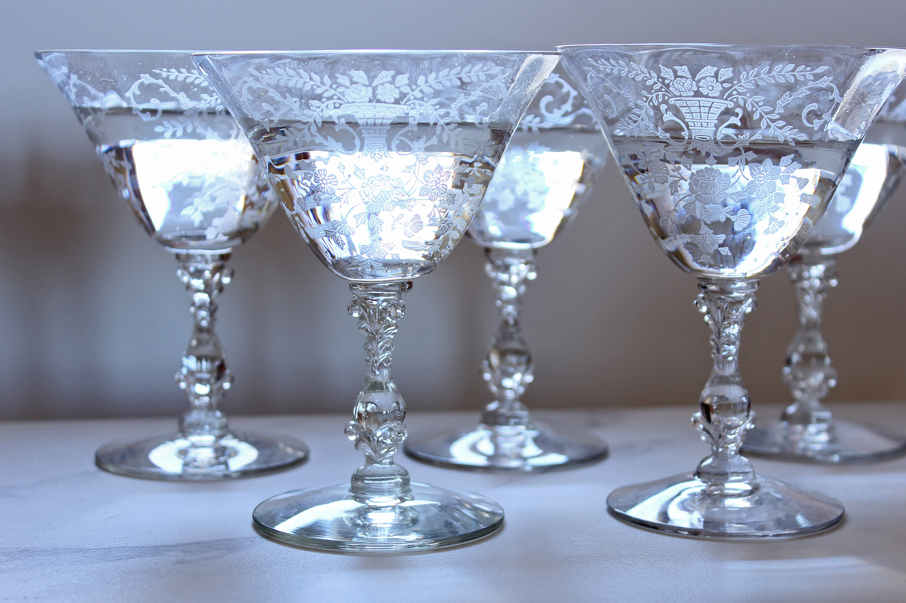
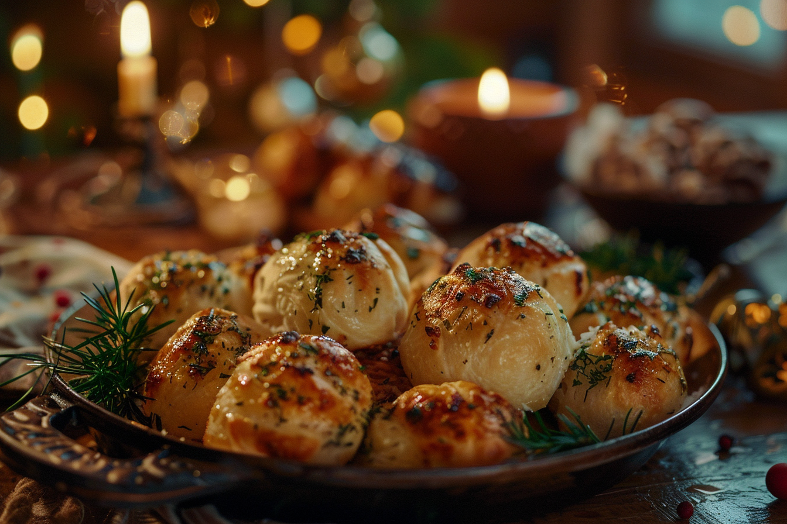
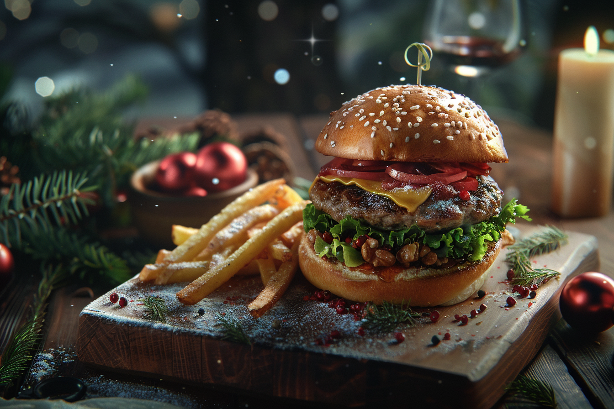

Menu
Beverages
-
Mountain Breeze Martini
6
A refreshing blend of gin, elderflower liqueur, fresh squeezed lemon juice, and a hint of mint, served in a chilled martini glass with a sprig of rosemary for garnish.
-
Pine Forest Spritz
6
A light and bubbly concoction made with gin, pine-infused syrup, sparkling water, and a splash of grapefruit juice, garnished with a sprig of fresh pine needles and a twist of grapefruit peel.
-
Summit Sparkler
9
A sophisticated blend of sparkling wine, St. Germain elderflower liqueur, and a splash of fresh lemon juice, finished with a delicate garnish of edible flowers and a twist of lemon peel, served in a flute glass for a touch of elegance.
-
Frosted Lemonade
3
Served in a chilled glass, each sip offers a burst of refreshing citrus flavor, perfectly balanced with just the right amount of sweetness.
-
Alpine Chai Latte
3
A comforting blend of spiced chai tea infused with steamed milk and a dollop of frothy foam, garnished with a sprinkle of cinnamon and served in a cozy mug.
Appetizers
-
Crispy Calamari
12
Tender rings and tentacles of calamari lightly coated in seasoned flour, fried until golden brown, and served with marinara sauce and lemon wedges for a classic and satisfying appetizer.
-
Vegetable Spring Rolls
8
Crispy spring rolls filled with a savory mixture of shredded cabbage, carrots, and mushrooms, served with sweet chili dipping sauce.
-
Classic Mozzarella Sticks
8
Crispy breaded mozzarella cheese sticks served with marinara sauce for dipping.
-
Garlic Knots
5
Soft and doughy garlic knots brushed with garlic butter and sprinkled with parmesan cheese, served with marinara sauce for dipping.
-
Classic Caesar Salad
10
Crisp romaine lettuce tossed with garlic croutons, shaved parmesan cheese, and tangy Caesar dressing.
Entrees
-
Gourmet Burger with Truffle Fries
14
A juicy Angus beef burger topped with melted Gruyere cheese, caramelized onions, arugula, and truffle aioli, served on a brioche bun with a side of crispy truffle-infused fries.
-
Fish Tacos
12
Soft corn tortillas filled with crispy battered fish, shredded cabbage, pico de gallo, and a drizzle of creamy chipotle sauce, served with a side of rice and beans.
-
Mushroom Risotto
15
Creamy risotto cooked with Arborio rice, mushrooms, shallots, garlic, white wine, and Parmesan cheese, garnished with fresh parsley and a drizzle of truffle oil.
-
Shrimp and Avocado Wrap
12
Grilled shrimp, avocado slices, mixed greens, diced tomatoes, and chipotle aioli wrapped in a warm flour tortilla, served with a side of sweet potato fries or a small salad.
-
Steak Sandwich
14
Sliced sirloin steak cooked to your liking, served on toasted ciabatta bread with caramelized onions, roasted red peppers, arugula, and horseradish aioli, accompanied by seasoned fries or a side salad.
-
Teriyaki Salmon Bowl
15
Grilled teriyaki-glazed salmon served over a bed of sushi rice with steamed broccoli and carrots, garnished with sesame seeds and sliced green onions.
Desserts

-
Classic New York Cheesecake
10
A rich and creamy cheesecake with a graham cracker crust, served plain or with a choice of fruit topping such as strawberry or blueberry compote.
-
Chocolate Lava Cake
10
A decadent chocolate cake with a molten chocolate center, served warm with a scoop of vanilla ice cream and a dusting of powdered sugar.
-
Brownie Sundae
6
Fudgy chocolate brownie squares topped with a scoop of vanilla ice cream, whipped cream, chocolate sauce, and a cherry on top.
-
Tiramisu
12
Layers of coffee-soaked ladyfingers and mascarpone cheese, dusted with cocoa powder and served chilled.
-
Crème Brûlée:
9
Creamy vanilla custard topped with a caramelized sugar crust, served chilled with fresh berries on the side.
-
Baked Alaska
10
Layers of cake and ice cream covered in meringue and baked until golden brown, served flambeed for a dramatic presentation.